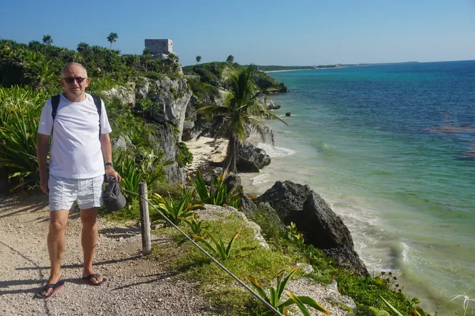

MeksykIX 2022
Tulum, miasto-państwo Majów
Rano, jeszcze bez turystów, nad Morzem Karaibskim. Jukatan, wrzesień 2022.

Moje państwa / Ameryka Północna
MeksykIX 2022
Rano, jeszcze bez turystów, nad Morzem Karaibskim. Jukatan, wrzesień 2022.